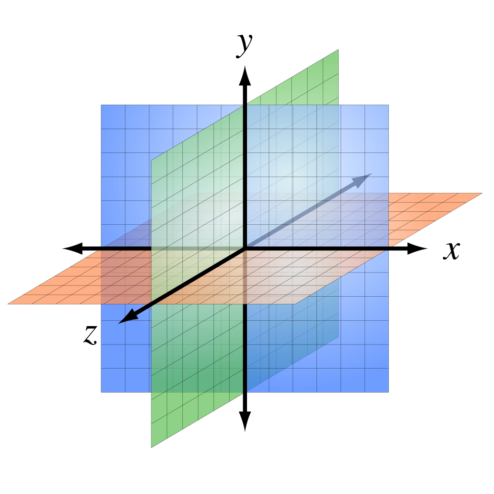
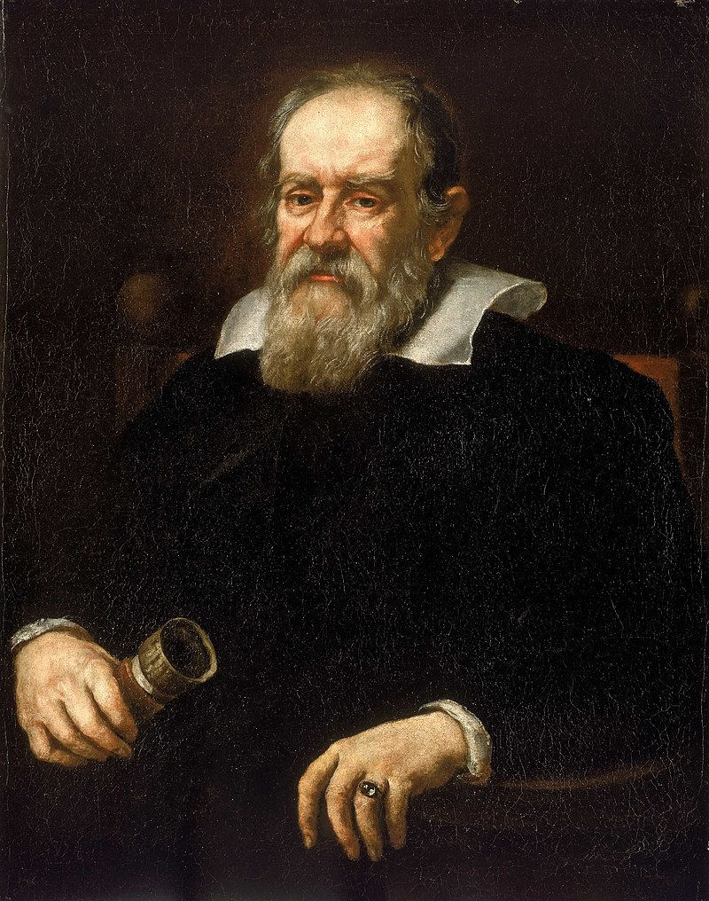
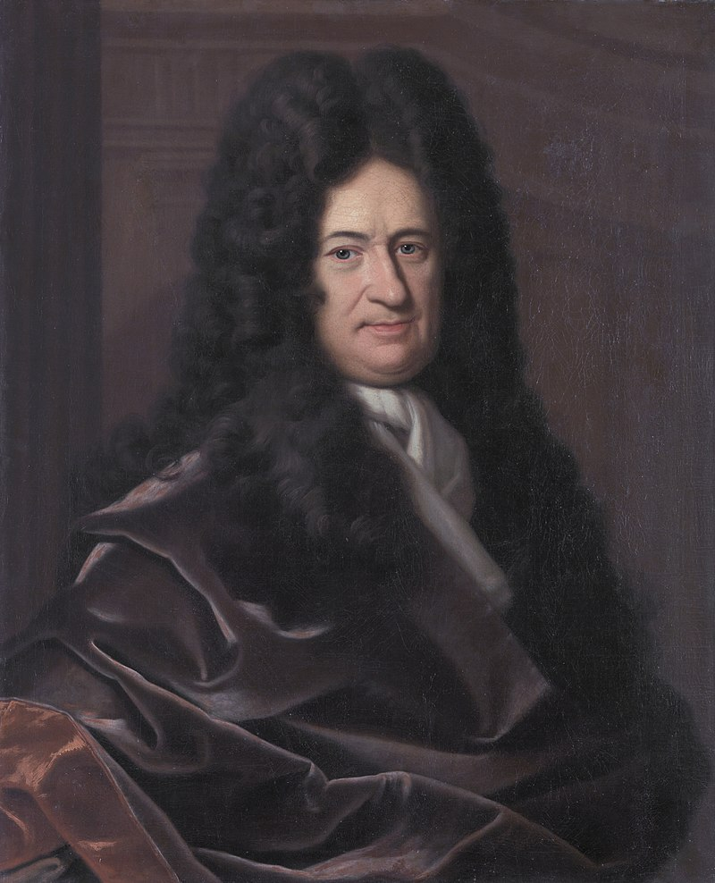
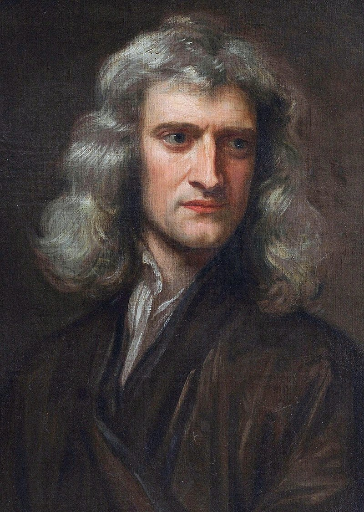

Space is the boundless three-dimensional extent in which objects and events have relative position and direction. In classical physics, physical space is often conceived in three linear dimensions, although modern physicists usually consider it, with time, to be part of a boundless four-dimensional continuum known as spacetime. The concept of space is considered to be of fundamental importance to an understanding of the physical universe. However, disagreement continues between philosophers over whether it is itself an entity, a relationship between entities, or part of a conceptual framework.
Debates concerning the nature, essence and the mode of existence of space date back to antiquity; namely, to treatises like the Timaeus of Plato, or Socrates in his reflections on what the Greeks called khôra (i.e. "space"), or in the Physics of Aristotle (Book IV, Delta) in the definition of topos (i.e. place), or in the later "geometrical conception of place" as "space qua extension" in the Discourse on Place (Qawl fi al-Makan) of the 11th-century Arab polymath Alhazen. Many of these classical philosophical questions were discussed in the Renaissance and then reformulated in the 17th century, particularly during the early development of classical mechanics. In Isaac Newton's view, space was absolute—in the sense that it existed permanently and independently of whether there was any matter in the space. Other natural philosophers, notably Gottfried Leibniz, thought instead that space was in fact a collection of relations between objects, given by their distance and direction from one another. In the 18th century, the philosopher and theologian George Berkeley attempted to refute the "visibility of spatial depth" in his Essay Towards a New Theory of Vision. Later, the metaphysician Immanuel Kant said that the concepts of space and time are not empirical ones derived from experiences of the outside world—they are elements of an already given systematic framework that humans possess and use to structure all experiences. Kant referred to the experience of "space" in his Critique of Pure Reason as being a subjective "pure a priori form of intuition".
In the 19th and 20th centuries mathematicians began to examine geometries that are non-Euclidean, in which space is conceived as curved, rather than flat. According to Albert Einstein's theory of general relativity, space around gravitational fields deviates from Euclidean space. Experimental tests of general relativity have confirmed that non-Euclidean geometries provide a better model for the shape of space.

Galilean and Cartesian theories about space, matter, and motion are at the foundation of the Scientific Revolution, which is understood to have culminated with the publication of Newton's Principia in 1687. Newton's theories about space and time helped him explain the movement of objects. While his theory of space is considered the most influential in Physics, it emerged from his predecessors' ideas about the same.
As one of the pioneers of modern science, Galileo revised the established Aristotelian and Ptolemaic ideas about a geocentric cosmos. He backed the Copernican theory that the universe was heliocentric, with a stationary sun at the center and the planets—including the Earth—revolving around the sun. If the Earth moved, the Aristotelian belief that its natural tendency was to remain at rest was in question. Galileo wanted to prove instead that the sun moved around its axis, that motion was as natural to an object as the state of rest. In other words, for Galileo, celestial bodies, including the Earth, were naturally inclined to move in circles. This view displaced another Aristotelian idea—that all objects gravitated towards their designated natural place-of-belonging.
Descartes set out to replace the Aristotelian worldview with a theory about space and motion as determined by natural laws. In other words, he sought a metaphysical foundation or a mechanical explanation for his theories about matter and motion. Cartesian space was Euclidean in structure—infinite, uniform and flat. It was defined as that which contained matter; conversely, matter by definition had a spatial extension so that there was no such thing as empty space.
The Cartesian notion of space is closely linked to his theories about the nature of the body, mind and matter. He is famously known for his "cogito ergo sum" (I think therefore I am), or the idea that we can only be certain of the fact that we can doubt, and therefore think and therefore exist. His theories belong to the rationalist tradition, which attributes knowledge about the world to our ability to think rather than to our experiences, as the empiricists believe. He posited a clear distinction between the body and mind, which is referred to as the Cartesian dualism.

Gottfried Leibniz.
Following Galileo and Descartes, during the seventeenth century the philosophy of space and time revolved around the ideas of Gottfried Leibniz, a German philosopher–mathematician, and Isaac Newton, who set out two opposing theories of what space is. Rather than being an entity that independently exists over and above other matter, Leibniz held that space is no more than the collection of spatial relations between objects in the world: "space is that which results from places taken together".Unoccupied regions are those that could have objects in them, and thus spatial relations with other places. For Leibniz, then, space was an idealised abstraction from the relations between individual entities or their possible locations and therefore could not be continuous but must be discrete. Space could be thought of in a similar way to the relations between family members. Although people in the family are related to one another, the relations do not exist independently of the people. Leibniz argued that space could not exist independently of objects in the world because that implies a difference between two universes exactly alike except for the location of the material world in each universe. But since there would be no observational way of telling these universes apart then, according to the identity of indiscernibles, there would be no real difference between them. According to the principle of sufficient reason, any theory of space that implied that there could be these two possible universes must therefore be wrong.

Isaac Newton.
Newton took space to be more than relations between material objects and based his position on observation and experimentation. For a relationist there can be no real difference between inertial motion, in which the object travels with constant velocity, and non-inertial motion, in which the velocity changes with time, since all spatial measurements are relative to other objects and their motions. But Newton argued that since non-inertial motion generates forces, it must be absolute. He used the example of water in a spinning bucket to demonstrate his argument. Water in a bucket is hung from a rope and set to spin, starts with a flat surface. After a while, as the bucket continues to spin, the surface of the water becomes concave. If the bucket's spinning is stopped then the surface of the water remains concave as it continues to spin. The concave surface is therefore apparently not the result of relative motion between the bucket and the water. Instead, Newton argued, it must be a result of non-inertial motion relative to space itself. For several centuries the bucket argument was considered decisive in showing that space must exist independently of matter.
Einstein.
In 1905, Albert Einstein published his special theory of relativity, which led to the concept that space and time can be viewed as a single construct known as spacetime. In this theory, the speed of light in a vacuum is the same for all observers—which has the result that two events that appear simultaneous to one particular observer will not be simultaneous to another observer if the observers are moving with respect to one another. Moreover, an observer will measure a moving clock to tick more slowly than one that is stationary with respect to them; and objects are measured to be shortened in the direction that they are moving with respect to the observer.
Subsequently, Einstein worked on a general theory of relativity, which is a theory of how gravity interacts with spacetime. Instead of viewing gravity as a force field acting in spacetime, Einstein suggested that it modifies the geometric structure of spacetime itself.[24] According to the general theory, time goes more slowly at places with lower gravitational potentials and rays of light bend in the presence of a gravitational field. Scientists have studied the behaviour of binary pulsars, confirming the predictions of Einstein's theories, and non-Euclidean geometry is usually used to describe spacetime.